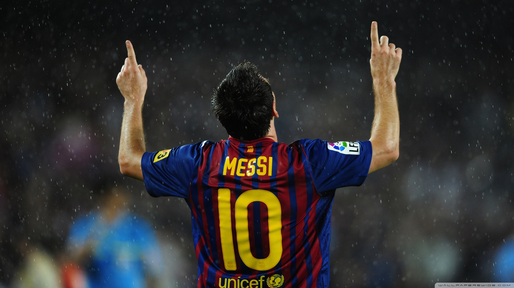
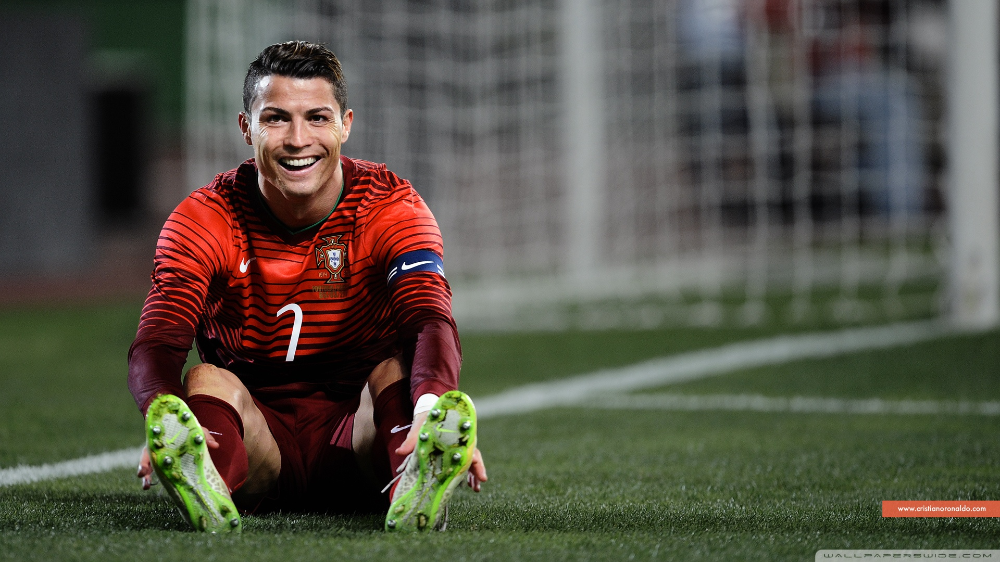
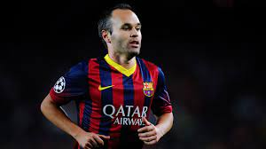
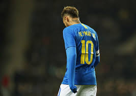
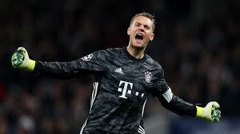

Os 5 Melhores Jogadores da Década
Olá, tudo bem? Neste site traremos um rank com os 5 melhores jogadores de futebol entre os anos de 2010-2019.
Segue abaixo as melhores campanhas ou temporada de cada jogador.
1. Lionel Messi

Sim, ele, o "ET", lidera o rank dos melhores jogadores da década. E seus números provam isso, são um pouco mais de 579 gols em 615 jogos (dados da ESPN).
Suas conquistas individuais são:
- 5 Bolas de ouro (2010, 2011, 2012, 2015 e 2019).
- Melhor jogador do mundo pela FIFA(2019).
- Ballon d'Or (2019).
- Chuteira de ouro da UEFA (2011–2012, 2012–2013, 2016–2017, 2017–2018 e 2018-2019)
- Melhor jogador da UEFA (2010-2011 e 2014-2015)
Seus títulos por sua equipe(s) e seleção
Barcelona
- Supercopa da Espanha (2010, 2011, 2013, 2016 e 2018)
- Campeonato Espanhol (2010–2011, 2012–2013, 2014–2015, 2015–2016, 2017–2018 e 2018–2019)
- Copa del Rey (2011–2012, 2014–2015, 2015–2016, 2016–2017 e 2017–2018).
- Supercopa da UEFA (2011 e 2015)
- Liga dos Campeões da UEFA (2010–2011 e 2014–2015)
- Mundial de Clubes da FIFA (2011 e 2015)
Seleção Argentina
- Copa do Mundo da FIFA (Vice-campeão em 2014)
- Copa América (Vice-campeão em 2015 e 2016, Terceiro lugar em 2019 e Campeão 2020)
Apesar de o nosso "ET" não ter números tão espressivos por sua Seleção, ainda assim, continua fazendo a diferença em campo e fez a sua história no Barcelona. O homem realmente veio de outro planeta.
2. Cristiano Ronaldo

É claro que logo depois do "ET", vem o "Robozão" ou melhor dizendo CR7. Considerado por muitos o melhor centroavante/ponta esquerda que fez 554 gols em 586 jogos (dados da ESPN).
Suas conquistas individuais são:
- 5 Bolas de ouro (2013 e 2014).
- Ballon d'Or (2016 e 2017).
- Chuteira de ouro da UEFA (2013-2014 e 2014-2015)
- Melhor jogador da UEFA (2013-2014, 2015-2016 e 2016-2017)
Seus títulos por sua equipe(s) e seleção
Real Madrid
- Supercopa da Espanha (2012 e 2017)
- Campeonato Espanhol (2011-2012 e 2016-2017)
- Copa del Rey (2010-2011 e 2013-2014).
- Supercopa da UEFA (2014 e 2017)
- Liga dos Campeões da UEFA (2013–2014, 2015-2016, 2016-2017 e 2017-2018)
- Mundial de Clubes da FIFA (2014, 2016 e 2017)
Juventus
- Campeonato Italiano (2018–19 e 2019–2020)
- Supertaça da Itália (2018 e 2020)
- Copa da Itália (2020)
Seleção Portuguesa
- Campeonato Europeu (2016)
- Liga das Nações da UEFA (2018–2019)
Os números e conquistas de CR7 são realmente exorbitantes. Por isso está em segundo no nosso rank.
3. Andréas Iniesta

Iniesta foi um dos melhores meio campista que o futebol já viu jogar, e que não poderia estar de fora desse rank. Marcando 51 gols em 471 jogos atingindo seu auge no barcelona.
Suas conquistas individuais são:
- Melhor Jogador da UEFA na Europa (2011–2012).
- Melhor jogador da Champions (2011-2012).
- Melhor jogador da Euro (2012)
- Melhor meia atacante da La Liga (2012–2013 e 2013–2014
Seus títulos por sua equipe(s) e seleção
Barcelona
- Supercopa da Espanha (2010, 2011, 2013 e 2016)
- Campeonato Espanhol (2010–2011, 2012–2013, 2014–2015, 2015–2016 e 2017–2018)
- Copa del Rey (2011–2012, 2014–2015, 2015–2016, 2016–2017 e 2017–2018).
- Supercopa da UEFA (2011 e 2015)
- Liga dos Campeões da UEFA (2010–2011 e 2014–2015)
- Mundial de Clubes da FIFA (2011 e 2015)
Vissel Kobe
- Copa do Imperador (2019)
- Supercopa Japonesa (2020)
Seleção Espanhola
- Campeonato Europeu (2016)
- Liga das Nações da UEFA (2018–2019)
Iniesta não é de fazer muitos gols, mas sempre que faz ou participa de uma jogada ele é incisivo e decisivo.
4. Neymar Jr

O melhor jogador que já foi revelado nos últimos anos pelo glorioso Santos, o famoso time de Pelé, que a cada ano que passa revela novos bons jogadores. Neymar marcou 342 gols em 524 jogos.
Suas conquistas individuais são:
- Melhor jogador da Recopa Sul-Americana (2012).
- Melhor jogador da Copa das Confederações (2013).
- Prémio FIFA Ferenc Puskás (2011).
- Melhor jogador da Copa Libertadores da América (2011).
Seus títulos por sua equipe(s) e seleção
Santos
- Campeonato Paulista (2010, 2011 e 2012).
- Copa do Brasil (2010).
- Copa Libertadores da América (2011).
- Recopa Sul-Americana (2012).
Barcelona
- Supercopa da Espanha (2013)
- Campeonato Espanhol (2014–2015 e 2015–2016 )
- Copa del Rey (2014–2015, 2015–2016 e 2016–2017).
- Supercopa da UEFA (2015)
- Liga dos Campeões da UEFA (2014–2015)
- Mundial de Clubes da FIFA (2015)
Paris Saint-Germain
- Campeonato Francês (2017–2018 e 2018–2019).
- Copa da Liga Francesa (2017–2018).
- Supercopa da França (2018).
Seleção Brasileira
- Campeonato Sul-Americano Sub-20 (2011).
- Superclássico das Américas (2011, 2012, 2014 e 2018).
- Medalha de Prata nos Jogos Olímpicos de Londres 2012.
- Copa das Confederações (2013).
- Medalha de Ouro nos Jogos Olímpicos de Rio 2016.
Neymar sem sombras dúvidas já foi um dos jogadores mais decisivos em seu auge, e o que se mais destacou.
5. Manuel Neuer

Neuer é grande goleiro que teve sua ascendência no Bayern de Munique, onde atua até hoje.
Suas conquistas individuais são:
- Futebolista Alemão do Ano (2011 e 2014).
- Melhor Goleiro do Mundo FIFA (2013, 2014, 2015, 2016 e 2020).
- Melhor Goleiro (Luva de Ouro FIFA) da Copa do Mundo (2014).
- Onze d'or da Copa do Mundo FIFA de 2014.
Seus títulos por sua equipe(s) e seleção
Schalke 04
- Copa da Alemanha (2010–2011).
Bayern de Monique
- Campeonato Alemão (2012–2013, 2013–2014, 2014–2015, 2015–2016, 2016–2017, 2017–2018 e 2018–2019).
- Copa da Alemanha (2012–2013, 2013–2014, 2015–2016 e 2018–2019).
- Supercopa da Alemanha (2012, 2016 e 2018).
- Liga dos Campeões da UEFA (2012–2013).
- Supercopa da UEFA (2013).
- Copa do Mundo de Clubes da FIFA (2013).
Seleção Alemã
- Copa do Mundo FIFA 2014
Um jogador exemplar na sua posição que não deixa a desejar, e que serve de inspiração para os jovens goleiros.